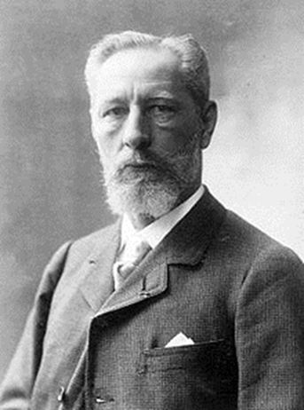
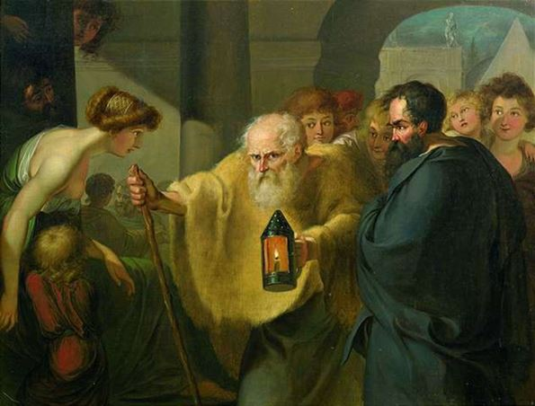
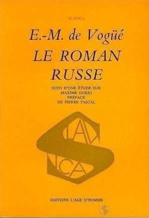
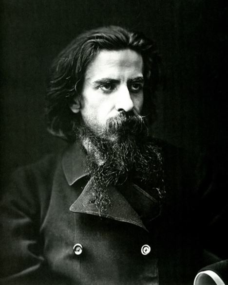

« L’homme est malheureux parce qu’il ne sait pas qu’il est heureux. »
F. Dostoïevski, Les Démons
La France d’Eugène-Melchior de Vogüé est en crise au moment où il présente à ses compatriotes les trésors de la littérature russe. « Ne voyez-vous pas, dit-il dans son Roman russe, que notre France s’étiole, que la volonté languit, et toutes les puissances de la vie avec elle ? Le remède est dans l’action1 ». Et il agit en important l’âme russe pour sauver l’âme française du désespoir. Ce geste apparaît au moment où il se révèle nécessaire à sa patrie. « Jamais livre ne tomba mieux à son heure », pouvons-nous lire dans À l’ère des nationalismes. Opinion française face à l’inconnu russe de Charles Corbet2. L’époque où l’intelligence, le bon sens et l’esprit vif de Vogüé portent leurs fruits est une époque particulièrement instable.
Pour mieux comprendre le besoin de la France de regarder au-delà de ses frontières, pour mieux réaliser la nécessité des changements ainsi que le succès du Roman russe d’Eugène-Melchior de Vogüé, il est nécessaire de donner un bref panorama de la fin du XIXe siècle.
La période entre la guerre de 1870 et celle de 1914 se caractérise par de nombreux bouleversements : boulangisme ; scandale de Panama en 1887-1893 ; affaire des congrégations à partir de 1880, aboutissant à la séparation de l’Église et de l’État en 1905 ; affaire Dreyfus en 1894. L’avenir de la France est remis en question. Le changement de régime en 1870 est accompagné d’une très grave crise décourageant le pays. Malgré l’accroissement matériel, le moral du peuple est tourmenté par un double bouleversement : celui de la défaite et celui de la Commune qui divise les esprits en réveillant les craintes de 1848. Cette situation favorise le pessimisme, en partie d’origine française, en partie d’origine étrangère (allemande) qui traverse également la philosophie et la littérature. L’individu troublé cherche à combler le vide spirituel dû à cette vague de pessimisme. C’est à ce moment qu’apparaît un besoin d’infini, un besoin d’au-delà. Ce goût du mysticisme et de l’irrationalisme s’explique aussi par le fait que les hommes se perdent dans un monde qui, par l’action de la science, se transforme à grande vitesse. La défaite porte un rude coup à la société française. Cette crise à la fois sociale, religieuse, littéraire et politique donne naissance à ce qu’on pourrait appeler une génération française perdue, qui restera longtemps troublée et hésitante.
Les événements de 1870-1871 confirment également l’échec du scientisme. Ce mouvement depuis longtemps controversé devient une des cibles d’une importante poussée spiritualiste. Le naturalisme, en tant que manifestation du scientisme en littérature, perd ses positions. La fin du siècle se caractérise par un changement de goût littéraire dû bien plus aux changements sociaux qu’à la mode. La violence des critiques contre le naturalisme manifeste la perception de ce changement3. Ces années terribles modifient également la situation de la France sur la scène internationale : le pays se trouve isolé et une des lignes directrices de sa politique extérieure consistera à poursuivre et à réaliser une alliance avec la Russie sans laquelle elle ne peut s’affranchir de la pression germanique. Il lui fallait impérativement contracter une alliance solide. Les relations entre la France et la Russie, de la guerre de 1870 à celle de 1914, s’organisent à plusieurs niveaux : politique, militaire, économique, scientifique, littéraire et artistique4. Je n’aborderai ici que les échanges intellectuels entre les deux pays. Ils n’ont pas seulement pour effet de renouveler les goûts littéraires des Français et les affiches de leurs théâtres, mais aussi d’encourager un genre nouveau, le roman cosmopolite5. Ce dernier a suscité une polémique marquante : le débat entre les « nationalistes » et les « cosmopolites ». Les premiers, ardents patriotes, sont persuadés que la littérature française contemporaine n’a pas besoin de chercher l’inspiration dans les romans étrangers. Les « cosmopolites », au contraire, constatent l’état maladif de la littérature française, et ne voient sa guérison que par l’apport de l’étranger.
Pour E.-M. de Vogüé, le conflit du nationalisme et du cosmopolitisme est le problème le plus complexe de tous ceux qui assaillent ses contemporains6. Son œuvre est l’exemple le plus significatif de la tendance cosmopolite. Il est un des premiers à tourner l’attention de la France vers la Russie. Étudier la Russie à cette époque lui semble une manière de servir la France7.
Son Roman russe est une attaque du roman naturaliste français. Le problème de l’universalité l’intéresse vivement.
Il traduit un sentiment très répandu au lendemain de la catastrophe de 1870 : la réaction d’un peuple ulcéré qui aspire à se recueillir, à se replier sur lui-même avant de prendre un nouveau départ. Mais la débâcle ne peut indéfiniment barrer l’avenir. Soucieux de faire carrière, des jeunes gens rejettent l’attitude austère et chagrine et regardent au-delà des frontières. Le besoin de renouvellement les attire vers les philosophies et les littératures étrangères. Entre 1870 et 1880, la philosophie de Schopenhauer pénètre vraiment la pensée française, préparée à la comprendre par le pessimisme baudelairien8. L’individu moderne ressemble de plus en plus à celui décrit par le philosophe allemand : déchiré, noyé dans l’ennui, angoissé, agressif, égoïste, indifférent à tout ce qui l’entoure, se défiant de son esprit, indécis et porté par la vie descendant le courant9. Et c’est entre 1880 et 1890 que la littérature russe arrive en France comme un contrepoison au matérialisme allemand. Son esprit consolateur semble être une solution plus efficace que les sagesses bouddhiques recommandées par Schopenhauer. Ainsi « la seconde moitié du XIXe siècle voit se développer en France une science des choses russes qui vient relayer les impressions des voyageurs ou les curiosités scientifiques d’amateurs10 ». Une nouvelle image de la Russie commence à se former dans le public, créant un terrain favorable à l’accueil de sa littérature en France. La Russie devient la mode. Les Français cessent de l’insulter et perdent leur complexe de supériorité à son égard. Après 1870, ils continueront à parler de la Russie comme d’une nation très puissante mais insuffisamment civilisée. La publication du Roman russe de E.-M. de Vogüé change la donne. « Ce livre a renforcé la cause de l’alliance franco-russe, et le désir de l’alliance a multiplié le succès de cette œuvre11. » Le vicomte y met en valeur et en avant la littérature russe, prouvant ainsi aux Français la grandeur de cette mystérieuse nation. Mais tel n’était pas son objectif principal. Vogüé écrit Le Roman russe pour des raisons morales, littéraires et politiques. Il présente à la France cette littérature qui pourra, à son avis, insuffler à la littérature de son pays la vie qui lui manque12, grâce à quoi l’âme française sera sauvée. Et le meilleur moyen, pour Vogüé, de sauver l’âme de la nation, c’est la littérature, « cette confession des sociétés. » Il y voit le plus vrai témoignage de l’esprit d’un peuple13.
Examinons les raisons de l’importation de la littérature russe en France dans les dernières décennies du XIXe siècle. Certes, la Russie n’est pas le premier pays à avoir des échanges avec la France. Cette dernière s’est déjà entichée d’autres pays étrangers : Italie, Espagne, Angleterre et Allemagne. Mais seule la littérature russe, présentée par E.-M. de Vogüé dans les années 1880, a réussi à non seulement enrichir la littérature française mais également à en modifier le cours.
Raison politique de l’importation de la littérature russe en France
La faible position de la France sur la scène internationale détermine son entente avec la Russie. À partir de 1870 la France se tourne vers ce pays largement inconnu. La France est tombée dans un abîme pire encore que celui de 181414. Isolée et impuissante, elle a doublement besoin de la Russie : d’un côté, pour faire face à l’Allemagne, et, de l’autre, pour sortir d’une décadence à la fois littéraire et morale. La propagande engendre une mode des « choses russes ». Les travaux les plus éclairants sur le monde russe avant Vogüé sont ceux de A. Rambaud, de L. Léger, de C. Courrière et de A. Leroy-Beaulieu. Mais la contribution de l’auteur du Roman russe à l’histoire littéraire française reste incomparable aux essais des autres russophiles de l’époque. Le premier, Vogüé démontre la subtilité psychologique et la profondeur de l’âme des romanciers russes. Avec son œuvre, il fait de la Russie un événement littéraire. Cette promotion de la littérature russe obéit à une stratégie politique. D’après Christophe Charle, « l’écrivain de l’époque, pour garder sa raison d’être, doit conquérir son public à tout prix, donc devenir un porte-parole de la politique générale15. »
Une des missions de E.-M. de Vogüé est la préparation de l’entente franco-russe. Les Français se tournent facilement vers la Russie par nostalgie de l’Ancien Régime. Pour eux c’est le pays du passé, le présent russe apparait ainsi comme le passé français. L’esprit monarchique de la nation française la dispose en faveur d’une alliance avec le tsar. À cet argument politique s’ajoute, en le complétant, un autre plus important encore : la raison morale de l’implantation des idées russes en France. « Je crois, dit Vogüé dans sa préface, qu’il faut travailler à rapprocher les deux pays par la pénétration mutuelle des choses de l’esprit. Entre deux peuples, comme entre deux hommes, il ne peut y avoir amitié étroite et solidarité qu’alors que leurs intelligences ont pris le contact16. »
Raison morale de l’importation de la littérature russe en France
E.-M. de Vogüé rêve d’une profonde révolution morale de la société française. La crise du pays ne peut laisser indifférent les sentiments patriotiques du vicomte. Ses années passées en Russie l’aident à affirmer dans son opinion de la France contemporaine. L’état maladif de sa patrie trouve ses racines dans une crise spirituelle. Si la France avait su sauvegarder son ancien esprit religieux, le pays n’aurait pas connu un tel désastre17. À travers le peuple russe, Vogüé trouve le remède qu’il souhaite au peuple français : la synthèse de la matière et de l’esprit18, autrement dit, l’union entre le limon et le souffle. Dans son Roman russe, il explicite cette idée :
« Le Seigneur Dieu forma l’homme du limon de la terre. » Voyez comme ce mot est juste et significatif, le limon ! […] Il renferme tout ce que nous devinons des origines de la vie. […] La formation par le limon, c’est tout ce que peut connaître la science expérimentale ; […] on y peut étudier la misère de l’animal humain, tout ce qu’il y a en lui de grossier, de fatal et de pourri. Oui, mais il y a autre chose que la science expérimentale ; le limon ne suffit pas à accomplir le mystère de la vie, il n’est pas tout notre moi : ce grain de boue que nous sommes […], nous le sentons animé par un principe à jamais insaisissable pour nos instruments d’études. Il faut compléter la formule pour nous rendre raison de la dualité de notre être ; aussi le texte ajoute : – « … et il lui inspira un souffle de vie, et l’homme fut une âme vivante. » – Ce « souffle », puisé à la source de la vie universelle, c’est l’esprit, l’élément certain et impénétrable qui nous meut, qui nous enveloppe, qui déconcerte toutes nos explications, et sans lequel elles seront toujours insuffisantes. Le limon, voilà l’ordre des connaissances positives […], mais tant qu’on ne fait pas intervenir le « souffle », on ne crée pas une âme vivante, car la vie ne commence que là où nous cessons de comprendre19.
Dans la thèse de Magnus Röhl, on trouve le développement de cette idée :
Le limon et le souffle sont deux termes qui couvrent deux aspects de la condition humaine. On peut dire que limon se transforme et devient matière, science, ouest, aujourd’hui, démocratie, absolu, vie extérieure, etc. ; de même souffle se décline et devient esprit, foi, est, jadis, autocratie, relatif, vie intérieure […]20.
 Vladimir SolovievLe meilleur exemple de l’union de la matière et de l’esprit, selon Vogüé, c’est l’âme russe, profondément religieuse et humaniste. Cette âme russe que Dostoïevski met en valeur dans son œuvre « ne se laisse enfermer dans aucune des déterminations particulières qui définissent un caractère national21 ». Nous avons ici affaire au mystérieux peuple russe, plein de contradictions. Berdiaev développe ce thème dans une étude intitulée L’Âme de la Russie22. Foi, amour et espérance sont les fondements d’un peuple qui cherche sa voie. E.-M. de Vogüé, séjournant en Russie, observe partout le désir de nourriture spirituelle. L’idéal divin chez les Russes n’est jamais séparable de l’idéal humain, telle est l’idée centrale de la philosophie russe. V. Soloviev appelle ce concept bogoeloveestvo (divino-humanité)23. Et c’est probablement Soloviev, un grand philosophe de l’union de la matière et de l’esprit, qui a influencé l’idée de la synthèse développée dans le Roman russe. Le christianisme, dit-il, n’est pas seulement la foi en Dieu, mais aussi la foi en homme24.
La preuve de cette union réside dans l’art des icônes. La philosophie russe diffère, en ce sens, totalement de la philosophie occidentale :
En Occident, on distingue nettement théologie et philosophie ; la philosophie religieuse y est un phénomène rare que n’apprécient ni les théologiens ni les philosophes. En Russie la philosophie a toujours eu un caractère religieux, et toute profession de foi avait un point de départ philosophique25.
Alexandre KoyréFondement de la Russie, le sentiment religieux y existe indépendamment de la pratique religieuse. Il est devenu une façon de réfléchir, une façon de vivre. Dans son essai sur la Russie et la Révolution, Fiodor Tioutchev écrit : « Le peuple russe est chrétien, non seulement par l’orthodoxie de ses convictions, mais aussi par quelque chose de plus cordial que ces convictions. Il l’est par son aptitude de renoncement à soi-même et de sacrifice de soi qui fait le fond de sa nature morale26 ». C’est dans ce contexte que Vogüé oppose Français aux Russes. Un décalage sépare ce que devrait être la France et ce qu’elle est vraiment. Son malheur principal est l’absence de foi et d’espérance27, les plus beaux ornements de l’âme, d’après lui. Seul le sentiment religieux peut la sauver. D’après A. Koyré, les Français ont justement perdu tout sens religieux :
La vie française n’est tout entière rien d’autre que la conscience de son vide et une aspiration douloureuse à la remplir n’importe comment. Mais tous les moyens employés à cet effet par la France s’avèrent illusoire et infructueux, car les vrais moyens infinis sont contenus dans la religion, dans le Christianisme, tandis que la France ne le connaît pas […]28.
Aux yeux du patriote qu’est avant tout E.-M. Vogüé, l’avenir de la France importe plus que tout autre problème. Il désire implanter l’âme russe dans la société française et écrit Le Roman russe pour partager son admiration de ce peuple slave qu’il voit grand. En faisant découvrir la littérature russe au peuple français, il espère le perfectionner, enrichir sa culture nationale grâce à l’humanisme russe. Mais « l’âme ne saurait voir la beauté, si d’abord elle ne devenait belle elle-même29 ».
Le meilleur moyen d’embellir l’âme française est de changer l’orientation de la littérature nationale. À commencer par l’élimination de la mauvaise littérature. Ainsi, la raison morale de l’importation de la littérature russe en France est secondée par une raison littéraire.
A. G.
1Eugène-Melchior de Vogüé, Le Roman russe [1886], préf. de Pierre Pascal, Lausanne, l’Âge d’Homme, coll. « Slavica », 1971, p. 351.
2Charles Corbet, À l’Ère des nationalismes. L’opinion française face à l’inconnu russe (1799-1894), Paris, Marcel Didier, 1967, p. 420.
3Christophe Charle, La Crise littéraire à l’époque du naturalisme : roman, théâtre, politique, Paris, Presses de l’ENS, 1979, p. 84.
4Michel Espagne, « Le Train de Saint-Pétersbourg. Les relations culturelles franco-germano-russes après 1870 » in Michel Espagne & Katia Dmitrieva (éd.), Philologiques IV : Transferts culturels triangulaires France-Allemagne Russie, Paris, MSH, 1996, p. 311.
5Paul Delsemme, Teodor de Wyzewa et le cosmopolitisme littéraire en France à l’époque du symbolisme, Bruxelles, Presses universitaires, 1967, p. 208.
6Eugène-Melchior de Vogüé, « Au seuil du siècle. Cosmopolitisme et Nationalisme », La Revue des Deux Mondes, 1er février 1901.
7A. Leroy-Beaulieu, La France, la Russie et l’Europe, Paris, Lévy, 1888. 8. Paul Delsemme, op. cit., p. 203.
8Paul Delsemme, op. cit., p. 203. 210 ANNA GICHKINA indécis et porté par la vie descendant le courant9
9Anne Henry (dir.), Schopenhauer et la création littéraire en Europe, Paris, Méridiens Klincksieck, 1989, p. 12.
10Michel Espagne, art. cit., 1996, p. 316.
11Charles Corbet, op. cit., p. 420.
12Eugène-Melchior de Vogüé, Le Roman russe [1886], op. cit. p. 39.
13Blaise Wilfert, « Cosmopolis et l’homme invisible. Les importateurs de la littérature étrangère en France, 1885-1914 », L’Acte de la recherche en science sociale, n° 144, 2002/4, p. 33-46.
14Charles Corbet, op. cit., p. 346.
15Christophe Charle, op. cit., p. 155.
16Eugène-Melchior de Vogüé, Le Roman russe [1886], op. cit., p. 33.
17Magnus Röhl, Le Roman russe de E.-M. de Vogüé, Stockholm, Almqvist et Wiksell International, coll. Stockholm Studies in History of Literature, 1976, p. 39-41.
18Ibid.
19Ibid., p. 46.
20Magnus Röhl, op. cit., p. 60.
21Jean Bonamour, Le Roman russe, Paris, PUF, coll. « Littératures Modernes », 1978, p. 11.
22Nikolaj Berdjaev, Duša Rossii [L’Âme de la Russie], M., 1915.
23Vladimir Solov’ev, tenija o bogoeloveestve ; statji ; poemy [Lectures sur la divino-humanité ; articles ; poèmes] (1878), dir. et préf. par A. B. Muratov, Xudožestvennaja literatura, SPb., 1994.
24Tomas Špidlík, L’Idée russe. Une autre vision de l’homme, Troyes, Fates, 1994,
25Nicolaï Berdiaev, L’Idée russe, Paris, 1969, p. 244.
26Fëdor Tjuev, Soinenija. Stixotvorenija i politieskie statji [Œuvres. Poèmes et articles politiques], SPb., 1900. Traduit par moi-même.
27Fiodor Dostoïevski, Souvenirs de la Maison des morts, préf. de E.-M. de Vogüé, trad. du russe par M. Nayroud, Paris, Plon, 1886, p. IX-X.
28Michel Cadot, « De l’idéalisme allemand au socialisme français : Un parcours intellectuel russe au XIXe siècle » in Michel Espagne & Katia Dmitrieva (dir.), Philologiques IV, op. cit., p. 299.
29Edouard Rod, Les Idées morales du temps présent, Paris, Didier, 1891, p. 284.
Partager cette page